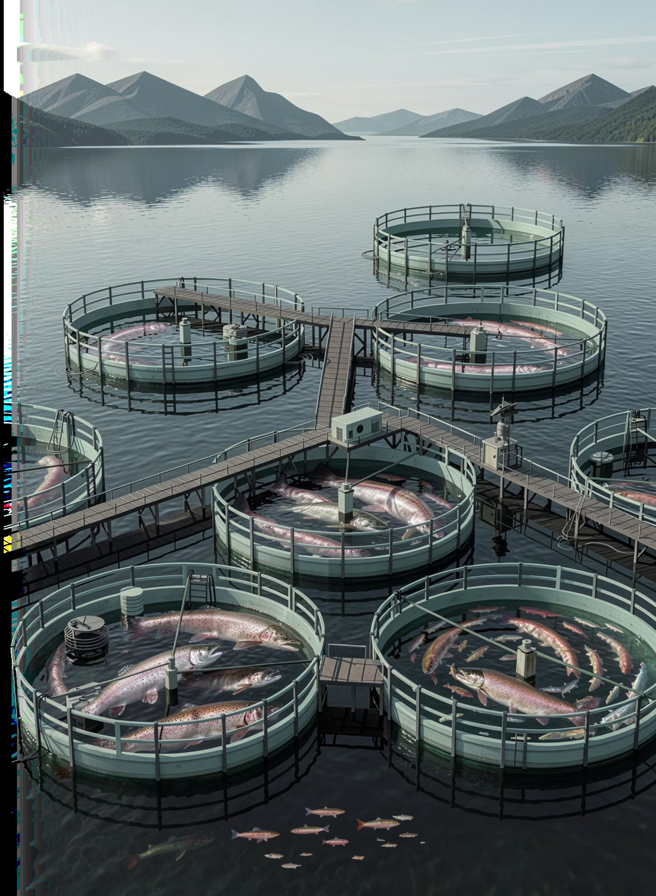

Automatización e Inteligencia Artificial para la industria salmonera: una solución de ARRAY que transforma la gestión de personas en ventaja operativa.
En la industria salmonera, donde los centros de cultivo y las plantas operan las 24 horas, los 7 días de la semana, el desfase en la comunicación de altas y bajas de personal genera cuellos de botella críticos que impactan directamente la productividad y la continuidad operativa.
Informática y RRHH reciben notificaciones con tiempos acotados de reacción, sin margen para preparar los recursos necesarios.
Los equipos internos operan en modo reactivo, apagando incendios en lugar de preparar el éxito del colaborador.
EPP, laptops y cuentas de acceso llegan tarde, dejando al nuevo empleado sin herramientas desde el primer día.
ARRAY implementa RPA (Automatización Robótica de Procesos) que monitorea continuamente el sistema de RRHH. Ante cada alta detectada, el robot activa de forma proactiva una cadena de procesos automáticos: el nuevo colaborador llega y todo está listo desde el minuto uno.
Monitoreo continuo del sistema RRHH.
Generación automática de red y correo.
Notificaciones instantáneas a TI y RRHH.
Acceso y servicios listos desde el primer día.
El robot trabaja en segundo plano de forma ininterrumpida, eliminando la dependencia del aviso manual y garantizando que cada área involucrada reciba la información correcta en el momento exacto.
Los anexos de contrato varían significativamente según el cargo: un técnico de planta, un buzo o un ejecutivo de operaciones reciben activos completamente distintos. ARRAY utiliza Inteligencia Artificial para procesar estos documentos no estructurados de forma precisa y automática.
La IA procesa anexos de contrato en múltiples formatos, independientemente de su estructura.
Reconoce qué activos recibió cada persona: EPP, equipos tecnológicos e implementos especializados.
Captura el valor inicial de cada activo para trazabilidad financiera y gestión patrimonial.
Los documentos de la industria no siguen una plantilla única. La IA adapta su lectura al documento, no al revés — eliminando la necesidad de estandarizar procesos manuales previos y permitiendo escalar la solución a distintos tipos de contratos, anexos, plantas y geografías sin intervención humana adicional.
Al detectar una baja en el sistema de RRHH, ARRAY activa automáticamente el módulo de gestión de activos. Se genera un reporte completo de activos asociados al colaborador, con valorización actualizada al momento exacto o proyectado de la desvinculación.
El RPA identifica el evento en RRHH y lanza el cierre de activos sin intervención manual.
Aplica el método de depreciación según el tipo de equipo y las políticas de la empresa.
Separa EPP (gasto) de activos de capital, respetando el tratamiento contable correcto.
Entrega el valor residual preciso de cada activo, sugiriendo los descuentos a aplicar en el finiquito.
El contraste entre el estado actual —reactivo y manual— y la solución automatizada de ARRAY evidencia ganancias concretas en agilidad, productividad, seguridad, trazabilidad y recuperación de capital.
| Proceso | ❌ Manual / Reactivo | ✅ Con ARRAY (Automatización + IA) |
|---|---|---|
| Notificación de Altas | Aviso tardío o informal; depende de la disponibilidad del personal de RRHH. | Detección automática e instantánea al momento del registro en el sistema. |
| Onboarding — Cuentas | Creación manual de cuentas; puede tardar días y generar bloqueos de acceso. | Cuentas de red y correo creadas automáticamente antes de que llegue el colaborador. |
| Entrega de EPP / Activos | Limitada planificación previa; logística improvisada bajo presión el día de ingreso. | Logística alertada con anticipación; activos preparados y listos el Día 1. |
| Inventario de Bajas | Proceso manual, propenso a omisiones y pérdida de activos sin registro. | Reporte automatizado e íntegro con todos los activos y su estado al momento de la baja. |
| Cálculo de Finiquito | Estimación subjetiva; sin base de depreciación objetiva ni trazabilidad documental. | Depreciación exacta por tipo de activo; cálculo justo, auditable y conforme a normativa. |
De Reactivos a Estratégicos: con ARRAY, TI y Logística dejan de apagar incendios y pasan a preparar el éxito de cada nuevo colaborador desde el minuto uno, con procesos que funcionan solos.
Impacto Directo en el P&L: cada activo —desde una parka térmica hasta un laptop de alta gama— es trazable y valorizado justamente al momento de una baja, protegiendo el patrimonio de la empresa.
El valor que ARRAY entrega no es solo tecnología, sino certeza operativa. En una industria donde los centros de cultivo y las plantas operan 24/7, no podemos permitir que el talento humano se detenga porque la información llegó tarde.
RRHH, TI y Logística se convierten en una ventaja competitiva sostenible para la industria salmonera.
Cero tiempo muerto para el nuevo empleado. El colaborador llega y todo está listo: accesos, equipos y activos lo esperan desde el primer minuto.
Recuperación de capital mediante cálculos de depreciación exactos. Cada activo trazado, valorizado y gestionado con precisión contable irrefutable.
Procesos automáticos y monitoreados, que cumplen con la normativa vigente y eliminan el error humano, liberando al equipo para enfocarse en lo estratégico.
Conversemos sobre cómo la automatización e inteligencia artificial de ARRAY pueden optimizar el ciclo de vida de sus colaboradores.
Contáctanos Ver más servicios